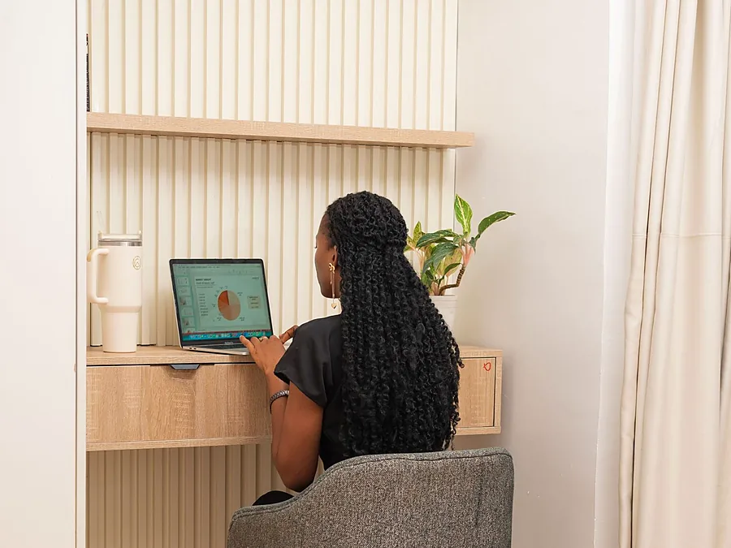

01
Assistant en cabinet médical
Accueil, organisation administrative et accompagnement des patients en cabinet médical.
Voir la fiche →Des formations en santé, TIC et gestion, organisées sur un an pour développer des compétences professionnelles et préparer un DQP ou un CQP.
Les compétences acquises et un DQP ou un CQP peuvent soutenir un projet d’emploi ou de poursuite d’études à l’international. La reconnaissance du diplôme et l’accès à ces opportunités dépendent des règles du pays d’accueil, des établissements, des employeurs et des visas.
Avant votre départ, renseignez-vous auprès des autorités et organismes compétents du pays visé sur l’équivalence du diplôme et les conditions d’admission ou d’emploi.
Formations accessibles aux niveaux annoncés sur les flyers : CEP, BEPC, Baccalauréat, BTS, Licence, GCE Ordinary Level et GCE Advanced Level.
Accueil, organisation administrative et accompagnement des patients en cabinet médical.
Voir la fiche →Appui aux soins maternels et aux professionnels de la santé féminine.
Voir la fiche →Conseil de base, accueil de la clientèle, gestion des produits et organisation d'une officine.
Voir la fiche →Soutien aux personnes dépendantes dans leurs activités quotidiennes et leur environnement.
Voir la fiche →Préparation des prélèvements, aide technique et organisation de base d'un laboratoire.
Voir la fiche →Maîtrisez les outils numériques, administratifs et financiers indispensables aux entreprises.
Gestion comptable, saisie et analyse des opérations avec des outils adaptés.
Voir la fiche →Procédures douanières, formalités, transport international et suivi des marchandises.
Voir la fiche →Accueil clientèle, opérations courantes, suivi des dossiers et culture financière.
Voir la fiche →Organisation des flux, planification, conservation et livraison des marchandises.
Voir la fiche →Création graphique, mise en page et réalisation de supports professionnels.
Voir la fiche →Diagnostic, dépannage, installation et sécurisation des équipements numériques.
Voir la fiche →
Rédaction, classement, communication professionnelle et gestion administrative.
Voir la fiche →Communication sur les réseaux sociaux, création de contenu et gestion de campagne.
Voir la fiche →